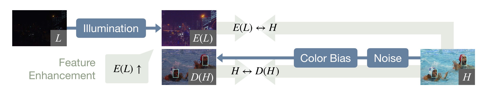
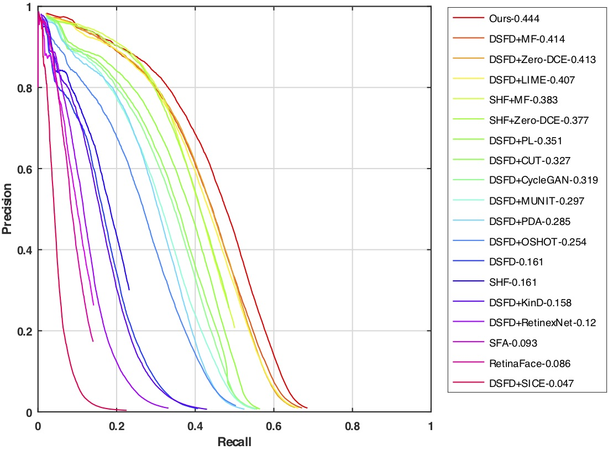
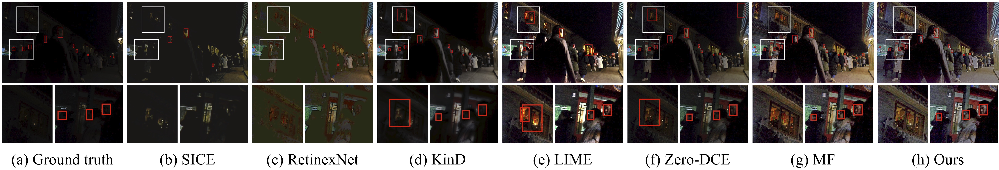

Motivation: comparison of different adaptive low light detection techniques. L: low light data. H: normal light data. Existing enhancement-based, darkening-based, and feature adaptation methods either ignore the high-level gap, or have limited effects due to the huge and complex gap between L and H. Our method instead considers both low-level and high-level adaptation, therefore achieves better performance.

Framework: LOW-LEVEL adaptation fills the gap by creating intermediate states. We bidirectionally brighten the low light data as well as distort the normal light data with noise and color bias. Based on the built intermediate states, we use multi-task cross-domain self-supervised learning to fill the HIGH-LEVEL gap.
Selected Experimental Results

Precision-Recall (PR) curves on DARK FACE.

Qualitative comparison of different enhancement-based methods. (a) Input low light image and the ground truth boxes. (b)-(g) Results of low-light enhancement methods with DSFD [1]. (h) Our result.
@ARTICLE{Huang_TIP_2022,
author = {Huang, Haofeng and Yang, Wenhan and Hu, Yueyu and Liu, Jiaying and Duan, Ling-Yu},
title = {Towards Low Light Enhancement With RAW Images},
journal={IEEE Transactions on Image Processing},
volume={31},
pages={1391-1405},
year={2022},
}